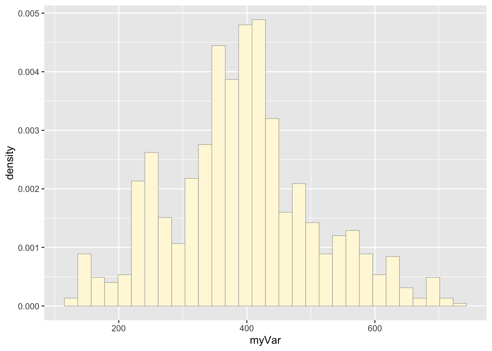

Homework 8
Graham Montague
2025-03-19
Run the sample code. Set up a new .Rmd file for this exercise. Copy and paste the code below into different code chunks, and then read the text and run the code chunks one at a time to see what they do. You probably won’t understand everything in the code, but this is a good start for seeing some realistic uses of ggplot. We will cover most of these details in the next few weeks.
library(ggplot2) # for graphics
library(MASS) # for maximum likelihood estimation
# Code chunk # 1: Read in data vector
# quick and dirty, a truncated normal distribution to work on the solution set
# z <- rnorm(n=3000,mean=0.2)
# z <- data.frame(1:3000,z)
# names(z) <- list("ID","myVar")
# z <- z[z$myVar>0,]
# str(z)
# summary(z$myVar)Try it with your own data. Once the code is in and runs, try running this analysis on your own data (or data from your lab, or data from a published paper; if you’re stumped, check out publicly available data sets on Dryad, ESA, or the LTER Network). Find a vector of data (of any size), set it up in a .csv file, and read the data into a data frame with this code chunk:
# z <- read.table("MyDataFile.csv",header=TRUE,sep=",")
# str(z)
# summary(z)
# This is freshwater drum total length data (along with depth data where the drum were captured) that were collected from Lake Erie using a bottom trawl.
z <- read.table("DrumLengths.csv",header=TRUE,sep=",")
str(z)## 'data.frame': 1075 obs. of 3 variables:
## $ ID : int 1 2 3 4 5 6 7 8 9 10 ...
## $ myVar: int 554 485 572 572 383 261 304 392 363 383 ...
## $ depth: num 3.5 3.5 60.2 60.2 60.2 60.2 60.2 60.2 60.2 60.2 ...summary(z)## ID myVar depth
## Min. : 1.0 Min. :125.0 Min. : 3.50
## 1st Qu.: 269.5 1st Qu.:324.5 1st Qu.:41.40
## Median : 538.0 Median :390.0 Median :47.10
## Mean : 538.0 Mean :392.3 Mean :45.59
## 3rd Qu.: 806.5 3rd Qu.:448.0 3rd Qu.:56.30
## Max. :1075.0 Max. :732.0 Max. :69.20Once your data are in, go ahead and comment out the “fake data” that are simulated in the chunk below. At that point, if you compile the entire file, it should run all of the code on your own data. Be sure to add comments to the code and commentary to the .Rmd file so that you can go back to it later and understand and use the code in your work
Code Chunk # 2: plot histogram of data
Plot a histogram of the data, using a modification of the code from lecture. Here we are switching from qplot to ggplot for more graphics options. We are also rescaling the y axis of the histogram from counts to density, so that the area under the histogram equals 1.0.
p1 <- ggplot(data=z, aes(x=myVar, y=..density..)) +
geom_histogram(color="grey60",fill="cornsilk",size=0.2) ## Warning: Using `size` aesthetic for lines was deprecated in ggplot2 3.4.0.
## ℹ Please use `linewidth` instead.
## This warning is displayed once every 8 hours.
## Call `lifecycle::last_lifecycle_warnings()` to see where this warning was
## generated.print(p1)## Warning: The dot-dot notation (`..density..`) was deprecated in ggplot2 3.4.0.
## ℹ Please use `after_stat(density)` instead.
## This warning is displayed once every 8 hours.
## Call `lifecycle::last_lifecycle_warnings()` to see where this warning was
## generated.## `stat_bin()` using `bins = 30`. Pick better value with `binwidth`.
Code Chunk # 3: add empirical density curve
Now modify the code to add in a kernel density plot of the data. This is an empirical curve that is fitted to the data. It does not assume any particular probability distribution, but it smooths out the shape of the histogram:
p1 <- p1 + geom_density(linetype="dotted",size=0.75)
print(p1)## `stat_bin()` using `bins = 30`. Pick better value with `binwidth`.
Code Chunk # 4: Get maximum likelihood parameters for normal
Next, fit a normal distribution to your data and grab the maximum likelihood estimators of the two parameters of the normal, the mean and the variance
normPars <- fitdistr(z$myVar,"normal")
print(normPars)## mean sd
## 392.296744 114.167809
## ( 3.482086) ( 2.462206)str(normPars)## List of 5
## $ estimate: Named num [1:2] 392 114
## ..- attr(*, "names")= chr [1:2] "mean" "sd"
## $ sd : Named num [1:2] 3.48 2.46
## ..- attr(*, "names")= chr [1:2] "mean" "sd"
## $ vcov : num [1:2, 1:2] 12.12 0 0 6.06
## ..- attr(*, "dimnames")=List of 2
## .. ..$ : chr [1:2] "mean" "sd"
## .. ..$ : chr [1:2] "mean" "sd"
## $ n : int 1075
## $ loglik : num -6618
## - attr(*, "class")= chr "fitdistr"normPars$estimate["mean"] # note structure of getting a named attribute## mean
## 392.2967Code Chunk # 5: Plot normal probability density
Now let’s call the dnorm function inside ggplot’s stat_function to generate the probability density for the normal distribution. Read about stat_function in the help system to see how you can use this to add a smooth function to any ggplot. Note that we first get the maximum likelihood parameters for a normal distribution fitted to thse data by calling fitdistr. Then we pass those parameters (meanML and sdML to stat_function):
meanML <- normPars$estimate["mean"]
sdML <- normPars$estimate["sd"]
xval <- seq(0,max(z$myVar),len=length(z$myVar))
stat <- stat_function(aes(x = xval, y = ..y..), fun = dnorm, colour="red", n = length(z$myVar), args = list(mean = meanML, sd = sdML))
p1 + stat## `stat_bin()` using `bins = 30`. Pick better value with `binwidth`.
Notice that the best-fitting normal distribution (red curve) for these data actually has a biased mean. That is because the data set has no negative values, so the normal distribution (which is symmetric) is not working well.
Code Chunk # 6: Plot exponential probability density
Now let’s use the same template and add in the curve for the exponential:
expoPars <- fitdistr(z$myVar,"exponential")
rateML <- expoPars$estimate["rate"]
stat2 <- stat_function(aes(x = xval, y = ..y..), fun = dexp, colour="blue", n = length(z$myVar), args = list(rate=rateML))
p1 + stat + stat2## `stat_bin()` using `bins = 30`. Pick better value with `binwidth`.Code Chunk # 7: Plot uniform probability density
For the uniform, we don’t need to use fitdistr because the maximum likelihood estimators of the two parameters are just the minimum and the maximum of the data:
stat3 <- stat_function(aes(x = xval, y = ..y..), fun = dunif, colour="darkgreen", n = length(z$myVar), args = list(min=min(z$myVar), max=max(z$myVar)))
p1 + stat + stat2 + stat3## `stat_bin()` using `bins = 30`. Pick better value with `binwidth`.Code Chunk # 8: Plot gamma probability density
gammaPars <- fitdistr(z$myVar,"gamma")## Warning in densfun(x, parm[1], parm[2], ...): NaNs produced
## Warning in densfun(x, parm[1], parm[2], ...): NaNs produced
## Warning in densfun(x, parm[1], parm[2], ...): NaNs producedshapeML <- gammaPars$estimate["shape"]
rateML <- gammaPars$estimate["rate"]
stat4 <- stat_function(aes(x = xval, y = ..y..), fun = dgamma, colour="brown", n = length(z$myVar), args = list(shape=shapeML, rate=rateML))
p1 + stat + stat2 + stat3 + stat4## `stat_bin()` using `bins = 30`. Pick better value with `binwidth`.Code Chunk # 9: Plot beta probability density
This one has to be shown in its own plot because the raw data must be rescaled so they are between 0 and 1, and then they can be compared to the beta.
pSpecial <- ggplot(data=z, aes(x=myVar/(max(myVar + 0.1)), y=..density..)) +
geom_histogram(color="grey60",fill="cornsilk",size=0.2) +
xlim(c(0,1)) +
geom_density(size=0.75,linetype="dotted")
betaPars <- fitdistr(x=z$myVar/max(z$myVar + 0.1),start=list(shape1=1,shape2=2),"beta")## Warning in densfun(x, parm[1], parm[2], ...): NaNs produced
## Warning in densfun(x, parm[1], parm[2], ...): NaNs produced
## Warning in densfun(x, parm[1], parm[2], ...): NaNs produced
## Warning in densfun(x, parm[1], parm[2], ...): NaNs produced
## Warning in densfun(x, parm[1], parm[2], ...): NaNs producedshape1ML <- betaPars$estimate["shape1"]
shape2ML <- betaPars$estimate["shape2"]
statSpecial <- stat_function(aes(x = xval, y = ..y..), fun = dbeta, colour="orchid", n = length(z$myVar), args = list(shape1=shape1ML,shape2=shape2ML))
pSpecial + statSpecial## `stat_bin()` using `bins = 30`. Pick better value with `binwidth`.## Warning: Removed 2 rows containing missing values or values outside the scale range
## (`geom_bar()`).Question # 3: Find best-fitting distribution.
Take a look at the second-to-last graph which shows the histogram of your data and 4 probability density curves (normal, uniform, exponential, gamma) that are fit to the data. Find the best-fitting distribution for your data. For most data sets, the gamma will probably fit best, but if you data set is small, it may be very hard to see much of a difference between the curves. The beta distribution in the final graph is somewhat special. It often fits the data pretty well, but that is because we have assumed the largest data point is the true upper bound, and everything is scaled to that. The fit of the uniform distribution also fixes the upper bound. The other curves (normal, exponential, and gamma) are more realistic because they do not have an upper bound.
Answer # 3:
I found that the normal probability density looks like the best fit to my freshwater drum length data.
Question # 4:
Simulate a new data set. Using the best-fitting distribution, go back to the code and get the maximum likelihood parameters. Use those to simulate a new data set, with the same length as your original vector, and plot that in a histogram and add the probability density curve. Right below that, generate a fresh histogram plot of the original data, and also include the probability density curve.
## Simulate new freshwater drum length data with the same length as the original data set (n = 1075)
set.seed(25)
# get the length of the original data
n <- length(z$myVar)
# get the mean and sd to generate random data
z2 <- rnorm(n, mean = normPars$estimate["mean"], sd = normPars$estimate["sd"])
# make this into a dataframe
z2 <- data.frame(1:1075,z2)
# make column names similar to original data
names(z2) <- list("ID","myVar")
z2 <- z2[z2$myVar>0,]
str(z2)## 'data.frame': 1074 obs. of 2 variables:
## $ ID : int 1 2 3 4 5 6 7 8 9 10 ...
## $ myVar: num 368 273 261 429 221 ...summary(z2$myVar)## Min. 1st Qu. Median Mean 3rd Qu. Max.
## 67.82 312.74 392.94 393.80 472.30 720.45# make a histogram plot of the simulated data
p2 <- ggplot(data=z2, aes(x=myVar, y=..density..)) +
geom_histogram(color="grey60",fill="cornsilk",size=0.2)
print(p2)## `stat_bin()` using `bins = 30`. Pick better value with `binwidth`.# Code Chunk # 3: add empirical density curve
p2 <- p2 + geom_density(linetype="dotted",size=0.75)
print(p2)## `stat_bin()` using `bins = 30`. Pick better value with `binwidth`.# Code Chunk # 4: Get maximum likelihood parameters for normal distribution for the simulated data
normPars2 <- fitdistr(z2$myVar,"normal")
print(normPars2)## mean sd
## 393.796807 113.857012
## ( 3.474223) ( 2.456646)str(normPars2)## List of 5
## $ estimate: Named num [1:2] 394 114
## ..- attr(*, "names")= chr [1:2] "mean" "sd"
## $ sd : Named num [1:2] 3.47 2.46
## ..- attr(*, "names")= chr [1:2] "mean" "sd"
## $ vcov : num [1:2, 1:2] 12.07 0 0 6.04
## ..- attr(*, "dimnames")=List of 2
## .. ..$ : chr [1:2] "mean" "sd"
## .. ..$ : chr [1:2] "mean" "sd"
## $ n : int 1074
## $ loglik : num -6609
## - attr(*, "class")= chr "fitdistr"normPars2$estimate["mean"] # note structure of getting a named attribute## mean
## 393.7968# Code Chunk # 5: Plot normal probability density for the simulated data
meanML2 <- normPars2$estimate["mean"]
sdML2 <- normPars2$estimate["sd"]
xval2 <- seq(0,max(z2$myVar),len=length(z2$myVar))
stat2 <- stat_function(aes(x = xval2, y = ..y..), fun = dnorm, colour="red", n = length(z2$myVar), args = list(mean = meanML2, sd = sdML2))
# simulated data
p2 + stat2## `stat_bin()` using `bins = 30`. Pick better value with `binwidth`.# raw drum data
p1 + stat## `stat_bin()` using `bins = 30`. Pick better value with `binwidth`.Question #5:
How do the two histogram profiles compare? Do you think the model is doing a good job of simulating realistic data that match your original measurements? Why or why not?
Answer # 5:
The two histograms show similar overall patterns with comparable data spreads, both approximating a normal distribution. However, the original data exhibits more irregularities with multiple peaks and valleys (multimodal), while the simulated data presents a smoother, more normal shape. This is likely from the the simulated data being generated from random numbers in a normal distribution, whereas real data often contains natural variability (collected in the field), and perhaps some measurement error. However, these two distributions look close to one another.
Question # 6:
If you have entered a large data frame with many columns, try running all of the code on a different variable to see how the simulation performs
Answer # 6:
I also ran this data using the depth data in the original dataset. This is cool code and it is fun to play around to see how the simulation preforms.